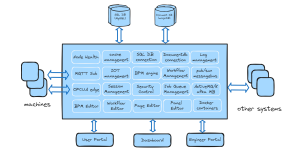
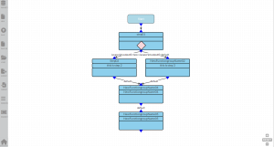
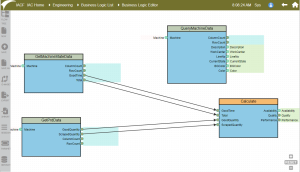
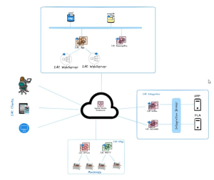

What is IACF
IACF (Industry Accelerator Framework) is a comprehensive solution that provides modern industry application solutions. It is designed to supply a framework that can adapt to different solutions. The features of IACF are intended to provide a high-performance backend, support cloud or local deployment, support the BPM flow definition and execution, message bus, database connection, and microservices.

The IACF backend is built using the Go language, which is known for its high performance and scalability. This makes IAC an ideal choice for applications that require high throughput and low latency. Go also has built-in concurrency support, which allows IACF to handle large numbers of concurrent connections efficiently.
The front end of IACF is built using pure HTML and JavaScript and is designed to be highly customizable. IACF also includes a UI framework that allows you to create dynamic UIs quickly and easily. The frontend of IACF is managed in IAC-UI project.
One of the critical features of IACF is its support for cloud or local deployment. This allows you to choose the deployment method that works best for your needs. The REST API that powers IAC is highly flexible and can be easily configured to suit your needs.
IAC also includes support for BPM flow definition and execution. This allows you to define and execute complex workflows, which can help to streamline your business processes and improve efficiency.

In addition to BPM, IACF also includes support for the message bus, which allows you to send and receive messages between different components of your application. This can be useful for building distributed systems or integrating different application components.

IAC also includes support for database connections. This allows you to easily connect to a wide variety of databases, including MySQL, PostgreSQL, and MongoDB. This makes it easy to store and retrieve data as needed.
Finally, IACF supports microservices, which allow you to deploy your application in a distributed manner. This can help to improve performance and scalability and can make it easier to manage your application as it grows.

In summary, IACF is a comprehensive solution that provides a high-performance backend, flexible front end, and support for cloud or local deployment. It also includes support for BPM flow definition and execution, message bus, database connection, and microservices. This makes IAC an ideal choice for building modern, scalable applications that can adapt to changing business needs.